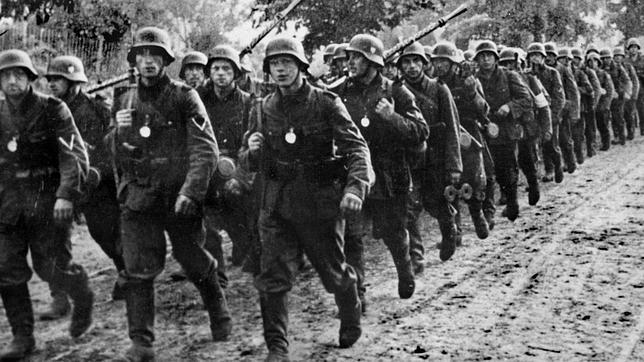
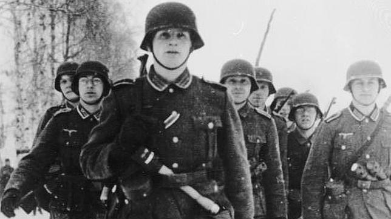
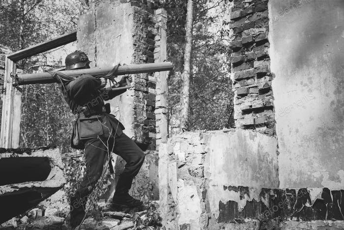

Fuerzas Armadas Alemanas durante la 2GM

Introducción
Wehrmacht es el nombre que recibieron las fuerzas armadas alemanas, surgidas en 1935 tras la disolución de la Reichswehr por el régimen nacionalsocialista. Durante la Segunda Guerra Mundial, la Wehrmacht consistía en el ejército (Heer), la marina de guerra (Kriegsmarine), la fuerza aérea (Luftwaffe) y a partir de 1940, encuadraba a las Waffen SS, añadiéndose ocasionalmente unidades de la Sturmabteilung (SA). Durante las hostilidades de los primeros tres años de la Segunda Guerra Mundial, la Wehrmacht logró victorias completas y resonantes en el teatro de operaciones, derrotando a los ejércitos europeos con relativa facilidad debido en gran medida a la avanzada ingenieria militar desarrollada por Alemania en esos años, sobre todo en el uso de la guerra relámpago cuando la mayoría de ejércitos europeos aún guiaban sus tácticas en base a fortificaciones estáticas y en la guerra de trincheras, sin tener planes para movimientos rápidos de tropas, y sin haber aprovechado las grandes posibilidades bélicas de una mortífera combinación de tanques en extensas formaciones ([[División Panzer|divisiones Panzer), infantería móvil y aviación de apoyo como la que practicaban los jefes militares germanos. La táctica de pinzas fue usada en Francia y la Unión Soviética con gran éxito entre 1940 y 1941. La moral combativa de la Wehrmacht, una oficialidad muy competente, sus tácticas veloces y masivas, el logro efectivo y rápido de objetivos, con suministros y logística muy eficaz, sumado al rearme avanzado con tanques tipo MK, muy rápidos, hicieron del ejército alemán uno de los más efectivos y poderosos para esa época. Para 1939 la Wehrmacht contaba con más de nueve millones de efectivos hábiles, de los cuales más de seis millones eran soldados profesionales con una experiencia en el ejército de más de 10 años. En la invasión de la Unión Soviética, que comenzó el 22 de junio de 1941, la Wehrmacht logró contundentes éxitos iniciales y la aniquilación de gran parte de las dotaciones de frontera del Ejército Rojo y profundos avances dentro del territorio de la URSS. Sin embargo, los soviéticos lograron resistir la embestida y movilizando todas sus reservas humanas y materiales, apoyados por sus crudos inviernos y la ayuda logística norteamericana, frenaron el empuje de los alemanes, quienes no pudieron hacerse con Moscú, en noviembre-diciembre de 1941, ni Stalingrado, en diciembre 1942-febrero de 1943, sufriendo en ésta última 300.000 bajas entre muertos y heridos, incluyendo unos 90.000 soldados germanos que quedaron como prisioneros de guerra. No obstante, la maquinaria bélica alemana aún era fuerte, al punto de mantener efectivamente ocupada a Europa y combatir en África. En el verano de 1943, sin embargo, la Wehrmacht sufrió otra grave derrota en tierras rusas, cuando en la batalla de Kursk, la contraofensiva soviética destruyó las mejores unidades blindadas de la Wehrmacht y le causó inmensas bajas. Por otra parte, en 1943 la Wehrmacht no logró rechazar la invasión angloestadounidense de Italia pero sí logró establecer una línea de defensa en el norte de la península, la cual resistió hasta abril de 1945. En 1944 la Wehrmacht, ya debilitada por las pérdidas en combate contra la Unión Soviética no pudo rechazar ni contener el avance de tropas británicas, estadounidenses y canadienses en Francia y Bélgica tras la batalla de Normandía, debiendo efectuar un rápido repliegue. Pese a esto durante el invierno de 1944-1945, la Wehrmacht realizó sorpresivamente en el frente occidental la ofensiva llamada Batalla de las Ardenas, siendo su última iniciativa de ataque, la cual no obstante terminó en derrota germana y la pérdida de hombres y material que la Wehrmacht ya no podía reemplazar fácilmente. A partir de 1944, la Wehrmacht carecía de suficientes soldados veteranos para cubrir sus filas, sus mejores tropas habían sido mayormente destruidas en batalla contra las tropas soviéticas en tres años de lucha, quedando ante ellas en una clara situación de inferioridad numérica, mientras que en sector occidental no podía resistir mucho tiempo la abrumadora superioridad material de los aliados occidentales. La Alemania de Hitler intentó paliar ese déficit de tropas reclutando desde 1943 a las Waffen SS como tropas adicionales de combate, inclusive en países ocupados, y cuando ello no bastó para cubrir la falta de soldados, en octubre de 1944 se instituyó la Volkssturm donde se enroló en la Wehrmacht a prácticamente todos los varones alemanes entre 14 y 65 años de edad que aún quedasen en retaguardia para defender el propio territorio germano. Los criminales bombardeos estadounidenses y británicos empezaron a dañar el suministro normal de combustibles y armas a las unidades de la Wehrmacht desde inicios de 1945, cuando ésta empezó a retroceder ininterrumpidamente hacia su punto de partida en ambos frentes. Sin embargo, en abril de 1945 aún podía contar con más de 7 millones de efectivos. La gran mayoría de estos pertenecían a la Volkssturm y mostraban gran afán de lucha en circunstancias tan adversas. La Wehrmacht fue derrotada finalmente por los rusos en la Batalla de Berlín, su última gran batalla. Las bajas fueron de cerca de 5.533.000 de alemanes y de otras nacionalidades que peleaban como aliados. El numero de heridos fue de 6.000.000 y los prisioneros de guerra 11.000.000.


